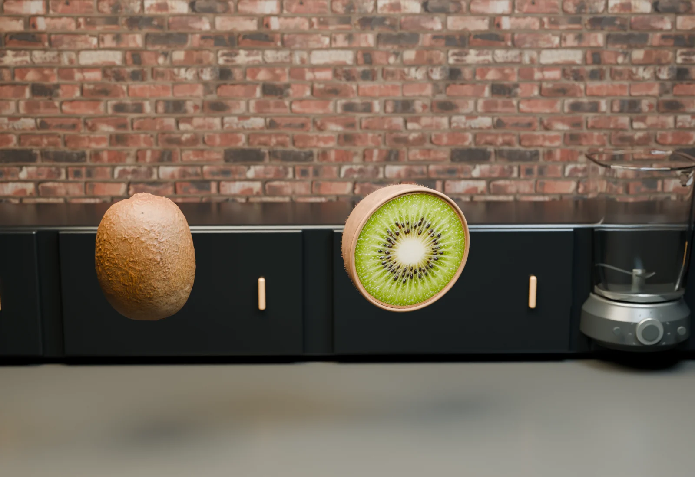

Ingredient pilot · Kiwi
Fresh from every angle.
A focused 3D study of one ingredient in the industrial kitchen. A scanned kiwi reveals its cut face, breaks into small pieces, becomes juice, then pours into two temporary bottles.

Ingredient pilot · Kiwi
A focused 3D study of one ingredient in the industrial kitchen. A scanned kiwi reveals its cut face, breaks into small pieces, becomes juice, then pours into two temporary bottles.
